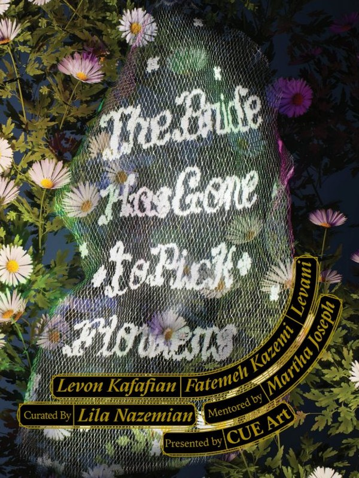
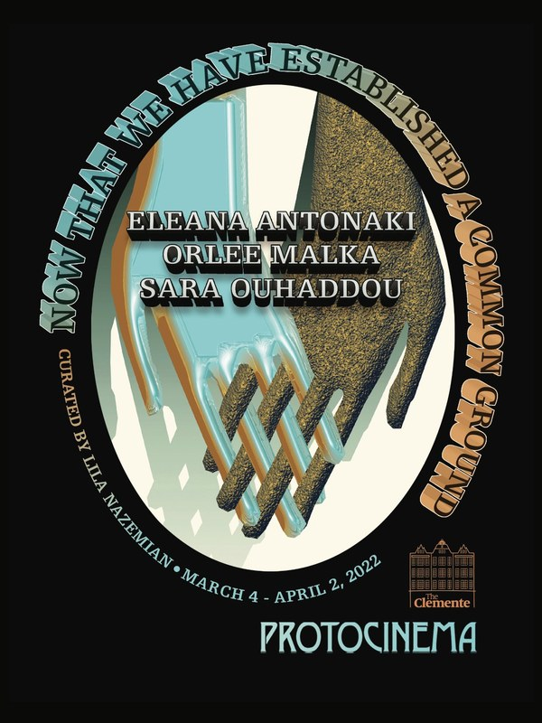
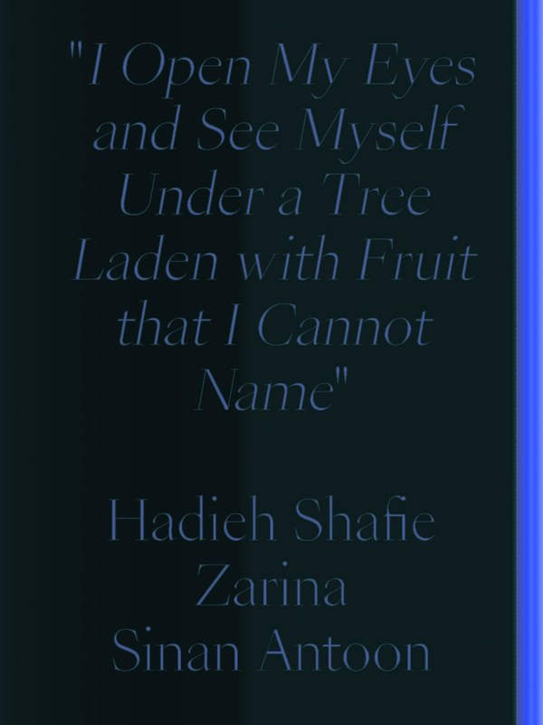
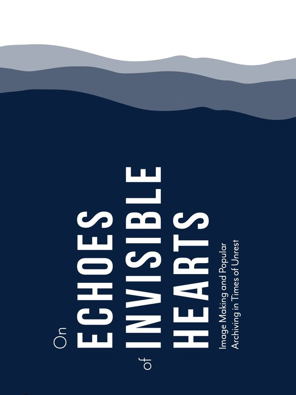
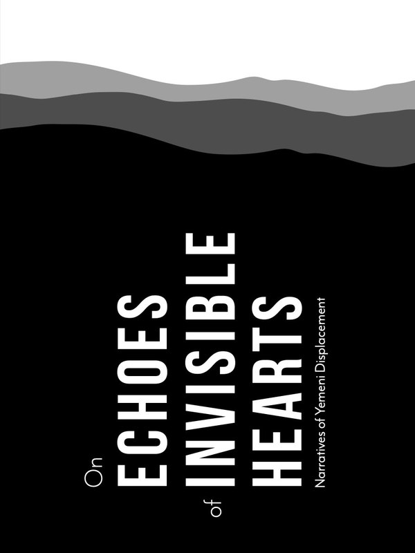
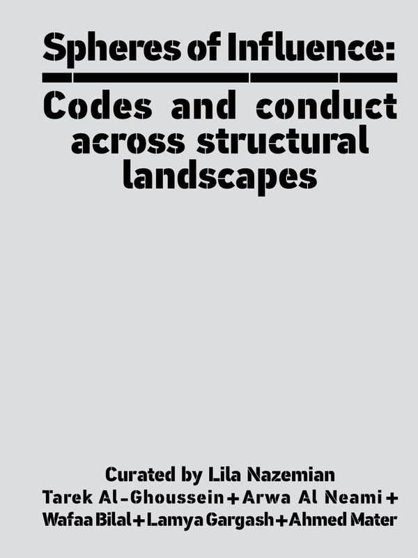

2025
The Bride Has Gone To Pick Flowers
Cue Art Foundation, New York
View catalogue ↗

2022
Now That We Have Established A Common Ground
Protocinema's Emerging Curator Series
View catalogue ↗

2020
I open my eyes and see myself under a tree laden with fruit that I cannot name
Center for Book Arts, New York
View catalogue ↗

2019
On Echoes of Invisible Hearts: Image Making and Popular Archiving in Times of Unrest
Station Beirut
View catalogue ↗

2018
On Echoes of Invisible Hearts: Narratives of Yemeni Displacement
Poetry Project, Berlin
View catalogue ↗

2016
Spheres of Influence: Codes and Conduct Across Structural Landscapes
Mohsen Gallery, Tehran
View catalogue ↗